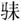
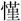
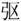
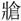
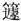

春秋公羊传卷二十六
定公下
定公六年
春，王正月癸亥，郑游遫帅师灭许，以许男斯归。
二月，公侵郑。公至自侵郑。
夏，季孙斯、仲孙何忌如晋。
秋，晋人执宋行人乐祁犂。
冬，城中城。
季孙斯、仲孙忌帅师围运。此仲孙何忌也，曷为谓之仲孙忌？讥二名，二名非礼也。
定公七年
春，王正月。
夏四月。
秋，齐侯、郑伯盟于咸。
齐人执卫行人北宫结以侵卫。
齐侯、卫侯盟于沙泽。
大雩。
齐国夏帅师伐我西鄙。
九月，大雩。
冬十月。
定公八年
春，王正月，公侵齐。公至自侵齐。
二月，公侵齐。三月，公至自侵齐。
曹伯露卒。
夏，齐国夏帅师伐我西鄙。
公会晋师于瓦。公至自瓦。
秋七月戊辰，陈侯柳卒。
晋赵鞅帅师侵郑，遂侵卫。
葬曹靖公。
九月，葬陈怀公。
季孙斯、仲孙何忌帅师侵卫。
冬，卫侯、郑伯盟于曲濮。
从祀先公。从祀者何？顺祀也。文公逆祀，去者三人。定公顺祀，叛者五人。
盗窃宝玉、大弓。盗者孰谓？谓阳虎也。阳虎者曷为者也？季氏之宰也。季氏之宰则微者也，恶乎得国宝而窃之？阳虎专季氏，季氏专鲁国，阳虎拘季孙，孟氏与叔孙氏迭而食之。睋而锓其板曰：“某月某日，将杀我于蒲圃，力能救我则于是。”至乎日若时而出，临南者，阳虎之出也，御之。于其乘焉，季孙谓临南曰：“以季氏之世世有子，子可以不免我死乎。”临南曰：“有力不足，臣何敢不勉。”阳越者，阳虎之从弟也，为右。诸阳之从者，车数十乘，至于孟衢，临南投策而坠之，阳越下取策，临南马，而由乎孟氏，阳虎从而射之，矢著于庄门。然而，甲起于琴如。弑不成，却反舍于郊，皆说然息。或曰：“弑千乘之主而不克，舍此可乎？”阳虎曰：“夫孺子得国而已，如丈夫何？”睋而曰：“彼哉！彼哉！趣驾。”既驾，公敛处父帅师而至，然后得免，自是走之晋。宝者何？璋判白，弓绣质，龟青纯。
定公九年
春，王正月。
夏四月戊申，郑伯囆卒。
得宝玉、大弓，何以书？国宝也。丧之书，得之书。
六月，葬郑献公。
秋，齐侯、卫侯次于五氏。
秦伯卒。
冬，葬秦哀公。
定公十年
春，王三月，及齐平。
夏，公会齐侯于颊谷。公至自颊谷。
晋赵鞅帅师围卫。
齐人来归运、讙、龟阴田。齐人曷为来归运、讙、龟阴田？孔子行乎季孙，三月不违，齐人为是来归之。
叔孙州仇、仲孙何忌帅师围郈。
秋，叔孙州仇，仲孙何忌帅师围费。
宋乐世心出奔曹。
宋公子池出奔陈。
冬，齐侯、卫侯、郑游遫会于鞌。
叔孙州仇如齐。
齐公之弟辰暨宋仲佗、石出奔陈。
定公十一年
春，宋公之弟辰及仲佗、石、公子池自陈入于萧以叛。
夏四月。
秋，宋乐世心自曹入于萧。
冬，及郑平。
叔还如郑莅盟。
定公十二年
春，薛伯定卒。
夏，葬薛襄公。
叔孙州仇帅师堕郈。
卫公孟帅师伐曹。
季孙斯、仲孙何忌帅师堕费。曷为帅师堕郈、帅师堕费？孔子行乎季孙，三月不违，曰：“家不藏甲，邑无百雉之城。”于是帅师堕郈、帅师堕费。雉者何？五板而堵，五堵而雉，百雉而城。
秋，大雩。
冬十月癸亥，公会晋侯盟于黄。
十有一月丙寅朔，日有食之。
公至自黄。
十有二月，公围成。公至自围成。
定公十三年
春，齐侯、卫侯次于垂瑕。
夏，筑蛇渊囿。
大蒐于比蒲。
卫公孟帅师伐曹。
秋，晋赵鞅入于晋阳以叛。
冬，晋荀寅及士吉射入于朝歌以叛。
晋赵鞅归于晋。此叛也，其言归何？以地正国也。其以地正国奈何？晋赵鞅取晋阳之甲以逐荀寅与士吉射。荀寅与士吉射者，曷为者也？君侧之恶人也。此逐君侧之恶人，曷为以叛言之？无君命也。
薛弑其君比。
定公十四年
春，卫公叔戍来奔。
晋赵阳出奔宋。
三月辛巳，楚公子结、陈公子佗人帅师灭顿，以顿子归。
夏，卫北宫结来奔。
五月，于越败吴于醉李。
吴子光卒。
公会齐侯、卫侯于坚。公至自会。
秋，齐侯、宋公会于洮。
天王使石尚来归脤。石尚者何？天子之士也。脤者何？俎实也。腥曰脤，熟曰燔。
卫世子蒯聩出奔宋。
卫公孟出奔郑。
宋公之弟辰自萧来奔。
大蒐于比蒲。
邾娄子来会公。
城莒父及霄。
定公十五年
春，王正月，邾娄子来朝。
鼷鼠食郊牛，牛死，改卜牛。曷为不言其所食？漫也。
二月辛丑，楚子灭胡，以胡子豹归。
夏五月辛亥，郊。曷为以夏五月郊？三卜之运也。
壬申，公薨于高寝。
郑轩达帅师伐宋。
齐侯、卫侯次于篨。
邾娄子来奔丧。其言来奔丧何？奔丧非礼也。
秋七月壬申，姒氏卒。姒氏者何？哀公之母也。何以不称夫人？哀未君也。
八月庚辰朔，日有食之。
九月，滕子来会葬。
丁巳，葬我君定公。雨不克葬。戊午日下昃，乃克葬。
辛巳，葬定姒。定姒何以书葬？未逾年之君也，有子则庙，庙则书葬。
冬，城漆。